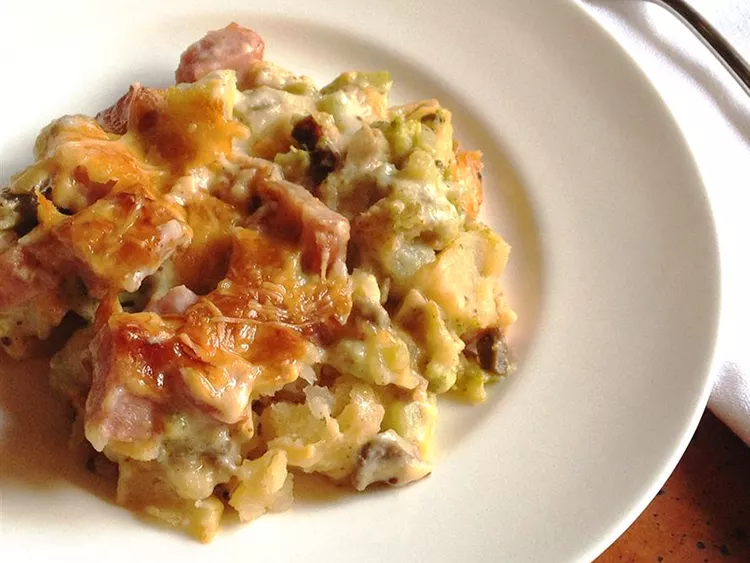

Ham, Potato and Broccoli Casserole
⭐ 4.4 (267 Reviews)
By Shirley | Updated on September 25, 2022
Prep Time: 5 mins
Cook Time: 40 mins
Total Time: 45 mins
This is a great, easy to make, and nutritious casserole. You can add some macaroni pasta or try seasoning the potatoes before you bake. Put this dish in the freezer and bake whenever you're too lazy to cook! Can also be made with leftover cooked chicken.
Ingredients
- 1 (16 ounce) package frozen French fries
- 1 (16 ounce) package frozen chopped broccoli
- 1 ½ cups cooked, cubed ham
- 1 (10.75 ounce) can condensed cream of mushroom soup
- 1 (10.75 ounce) can milk
- ¼ cup mayonnaise
- 1 cup grated Parmesan cheese
Directions
Step 1:
Preheat oven to 375 degrees F (190 degrees C).
Step 2:
Spray a 9x13 inch baking dish with cooking spray. Cover bottom of dish with layer of French fries. Add a layer of broccoli, then sprinkle ham evenly over broccoli. In a small bowl mix together soup, milk and mayonnaise. Pour mixture evenly over ingredients in baking dish and sprinkle with cheese.
Step 3:
Bake uncovered in preheated oven for 40 minutes.

Nutrition Facts (per serving)
Calories
Fat
Carbs
Protein